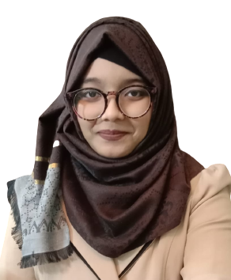

Currently exploring Summer 2025 internship opportunities — let’s connect!Azwaad Labiba Mohiuddin
PhD Student in Computer Science
University of Louisiana at Lafayette
👋 Hi, I'm Azwaad! I'm a PhD student trying to discover the areas of Image Processing and LLMs.
My research focuses on low-light image enhancement using deep learning and Transformer architectures. I'm passionate about developing innovative solutions that bridge the gap between theoretical research and real-world applications. My work aims to improve image quality in challenging lighting conditions, which has applications in medical imaging, autonomous vehicles, and surveillance systems. Currently, I'm exploring novel approaches to integrate attention mechanisms with traditional image processing techniques to achieve better performance with fewer computational resources. I believe in making AI accessible and practical for everyday use.
Beyond research, I enjoy web development and love staying updated with emerging technologies. I often tinker with new ideas and build small projects whenever inspiration strikes — though not all of them make it to my GitHub collection. My experience as a Software Engineer has given me a balanced perspective that bridges practical development with academic curiosity.
Coffee is my partner in crime — whether it’s a strong cold brew to kickstart a long work day or a cozy latte during late-night idea storms. It keeps me grounded, inspired, and occasionally over-caffeinated, but I wouldn’t have it any other way.
A Line That Stays With Me
Just because someone stumbles and loses their way, doesn't mean they're lost forever. Sometimes we all need a little help.
-Professor Charles Xavier
Skills & Expertise
Language Proficiency
- English: Full professional proficiency
- Bangla: Native proficiency
- French: Elementary proficiency
- Hindi: Elementary proficiency
Technical Skills
Languages
Java, Python, JavaScript, Typescript, PHP, HTML, CSS, LateX, SQL, Arduino
Frameworks & Libraries
ExpressJS, Django, Laravel, Springboot, Pandas, NumPy, Pytorch, OpenCV
Developer Tools
VSCode, Pycharm, Atom, Dr Java, Netbeans, Google Colab, Jupyter Notebook, Cisco Packet Tracer
Operating Systems & Hardware
Windows, Linux, Arduino UNO, Raspberry Pi 4